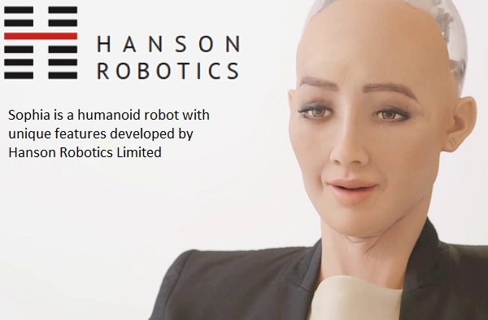

Welcome to our group website! Please select a section.
Team Members
There are four members in our team, "Powerpuff Girls" - Natanya (s3488872), Martina (s3908137), Wendy (s3898700) and Thao (s3901351).
Natanya
Hi, I’m Natanya and I’m from Melbourne - I was born in Sri Lanka and migrated to Australia when I was four. My passions are travel, fashion, photography, singing, design, and social psychology. I’m also passionate about the environment, international aid; and volunteering in these areas! I have travelled over the years to around 16 or so countries, in various capacities, learning the national languages where I could. After graduating high school in 2013, I went on to study a Bachelor of Fashion Design at RMIT for two years. Realising it wasn’t for me, and not what I wanted to do career-wise, I travelled and worked on and off, before considering enrolling in an IT degree. My pursuits in various areas over the years led me to realise I enjoyed things of a practical and logical nature, and my affinity for tech also made it easier to decide on this. Being a growing field, I found IT an ideal sector to enter, and already had some knowledge of the field through my brother (an IT consultant), and my own exploration and life experiences. Currently, I’d like to explore the areas of cloud-computing and cybersecurity, but am aware this might change. I’m a member of the team: Powerpuff Girls. You can read more about me here.
Martina
Hi I’m Martina and I am Australian Vietnamese. I like to play the keyboard, guitar and ukulele, and my go-to songs to play are either recent pop songs or ballads that I learn off of Youtube. One other thing is that I never fail to sing or hum a tune at least once a day. I started in the field of commerce fresh after high school, but I always had a small interest in the field of information technology, so I actually switched midway through my previous degree to pursue IT at RMIT. My understanding in IT is basic even though I grew up with technology all around me. The closest IT experience I have is in my everyday consumption of all the different technologies surrounding me, but I am keen to learn more about information technology in this Bachelor’s at RMIT. You can read more about me here.
Wendy
Hello, My name is Wendy Si and my student number is s3898700. I am from Shanghai, but was born and raised in Melbourne. My date of birth is the 8th of February 2003 and my background is Chinese. I graduated from Nossal High School in 2020 and am now a first year Bachelor of Information Technology at RMIT. I can speak English and Mandarin Chinese, and can understand Shanghainese. A fun fact about me is that I used to be a state level swimmer when I was around 10 years old. My hobbies are playing video games, reading manga, watching anime, going clubbing and going out with friends. My interest in Information Technology is mainly centred around the coding aspect, I am interested in creating programs and learning the languages. I like how Information Technology is very practical as well, with getting the opportunity to make things. This allows me to implement what I’ve learnt and be able to create projects and sharpen my skills. My experience in Information Technology is very minimal. I learnt enough HTML to build a website back in 2017 and completed an online course in Python 2 in 2018, however those skills are long forgotten as I haven’t retained my knowledge from that time. Our team's chosen name is the Powerpuff Girls.You can read more about me here.
Thao
Hi, my name is Thao and I am an Australian born Vietnamese. I was born on the 3rd of September, 2002, in Melbourne. I attended high school at Koonung Secondary College located in Mont Albert North and am currently in the process of completing my Bachelor of Information Technology at the Royal Melbourne Institute of Technology. My hobbies include drawing, badminton, reading, binge watching anime and you can often find me spending my Centrelink funds on food along Swanston Street. I have little experience with IT, other than the typical functionings of Microsoft programs, therefore I was interested in this course to challenge myself and learn more regarding different aspects of Information Technology. I also decided to pursue the information technology field as it plays such a fundamental role to today’s society. I am especially interested in the User Centred Design aspect of Information Technology, as I enjoy learning about how society utilises aspects of IT, to communicate ideas and make websites that appeal to audiences. Our team's chosen name is The Powerpuff Girls and you can read more about me here.
Team Profile - Personalities and Dynamics
Martina:
My (Myer-Briggs’) personality type is ISFP-A- adventurer, where my personality traits are Introverted, Observant, Feeling and Prospecting. My online learning style test results suggest I am a combination of a tactile learner (45%), auditory (30%) and visual (25%) learner. In my Big Five Personality test results, I scored a 67 in agreeableness, 62 in emotional stability, 46 in conscientiousness, 33 in extroversion, 2 in intellect/imagination. These test results show as an individual I am quite free-spirited and tend to enjoy doing things my own way and that I enjoy doing a lot more hands-on tasks. In a group setting my results confirm that I am a diligent worker when I am given a task, and that I would work hard to earn appreciation. I would be a reliable teammate, who would prefer a harmonious working relationship with my fellow peers and would try to solve problems as they come. My ideal team is diligent and supportive, with a similar work ethic as myself which is to do the tasks asked in a timely manner. I also prefer short term goals over long term goals, so I would need guidance and support to keep me motivated in projects that take time.
Natanya:
My personality type (as measured by the Myers-Briggs test) is type INFP-T (Turbulent Mediator) where my traits are 73% Introverted, 52% Intuitive, 69% Feeling, and 60% Prospecting. My learning style is multimodal according to VARK - scoring highest in Visual and Read/Write (11 each), 7 in Kinesthetic, and 4 in Aural. My Big Five Personality Test scores were: 45 in Extroversion, 30 in Emotional Stability, 80 in Agreeableness, 26 in Conscientiousness, and 14 in Intellect/Imagination. All of these results tell me that I tend to follow my emotions, am a perfectionist, and therefore leave things until the last minute as I have an all-or-nothing style/mentality. I need teammates to set deadlines so I can stick to them and be held accountable, but I am also conscious of others’ feelings and therefore do not want to let anyone down, so this drives me to complete whatever I do/my team does, to a high standard, as I am also very detail-oriented. Coming up with an interesting project idea might be difficult for me as I do not have a very good imagination, so I would need team members who are stronger in this area.
Thao:
According to the Myer-Briggs test, I am a INFP (Mediator) and I am 82% Introverted, 54% Intuitive and 63% Feeling and 65% Prospecting. Traits include Introversion, observant and idealistic. I am not one to take initiative on tasks, and will require a leader to direct me as I am not one to take on a leading role. I may also be too idealistic and not think logically, as I prioritise my feelings over logic. I am also sensitive to my surroundings and highly appreciate art and creativity.
For the learning style test by educationplanner.com, I am majorly a visual learner (64%), then a tactile learner (21%) and then Auditory learner (15% )
My big 5 personality traits according to truity.com I have openness (87.5%), Conscientiousness (12.5%), Extraversion (44%), Agreeableness (71%) and Neuroticism (90%). According to the results I am an empathetic idealist, and a practical caretaker and enjoy putting other people before myself. They state that I have a highly creative and imaginative way of thinking and I often see connections through interpretation. My thinking may be disrupted by unpleasant thoughts and I may have trouble focusing. My ideal team is one that has a leader and someone who can direct and allocate me tasks that I can follow. I would like the team to be collaborative and happy to assist each other with tasks, and keep each other accountable for our contributions within the team environment.
Wendy:
My test outcome for the 16personalities test was ISFP. ISFP people tend to have introverted, observant, feeling and prospecting personality traits.These results may influence my behaviour in a team negatively as ISFP personalities want to do things their own way and being in a team would restrict that. By taking these into account and according to 16personalities, when forming a team I should have a balance of set goals and also freedom to express myself as well as dealing with problems one-on-one or by myself. According to educationplanner.org, I am a 50% visual learner, 45% auditory learner, and 5% tactile learner. Visual learner means that you learn by reading or seeing pictures and understand through sight. These results may impact my behaviour in a team negatively as visual learners may have difficulty with spoken instructions which are often presented in group settings through discussions and interactions.Behaviours of visual learners that could benefit a team is having a strong imagination and understanding projects as a whole. By taking these traits of visual learners into account when forming a team, I should aim to try and write down instructions I get so that I am able to review and understand them at a later date, and also contributing my ideas before the opportunity passes.The results from truity.com show that I scored high in neuroticism and low in conscientiousness. Those scoring high in neuroticism typically react to situations negatively, or think about situations in a pessimistic manner. Those with low conscientiousness scores are often more impulsive and easily distracted. Going by these results, my behaviour would impact my team negatively, as I would not stay on top of tasks and deadlines, and also give up easily when plans go astray. By taking these results into account, a way to combat these negative traits would be to actively try to overcome them by recognising when the behaviours are being exhibited and correcting them.
According to everybody’s ideal jobs, they are all quite different as Martina has specified that her ideal job title is a ‘Programmer Systems Analyst,’ Natanya is interested in completing a graduate program as a cloud-computing engineer consultant, Thao is leaning towards pursuing User Experience Design and Wendy is interested in being a Cyber Security Analyst. All these roles do have a similar aspect as they require analysing and research and working with clients. These are all communicative jobs that are associated with Information Technology and are typically associated with working with customers, clients and more of a collaborative career rather than working individually and independently. This is especially reflected in the job description as Martina would be required to “assist in the design and development of new systems to streamline the work healthcare providers are required to do,” and Natanya would be required to gain “experience with their Singapore clients'' and “fixing issues in clients’ existing cloud systems” and Thao would be required to “consult with clients to understand their goals and explain research results” and “analyse user feedback and activity and iterating to enhance the user experience.” Wendy would be required to “research and evaluate cyber security threats”.
All our ideal jobs sway away technical and logical aspects, however, require soft skills to be able to emphasise and understand other’s needs. Martina would be required to find hiccups that may hinder the healthcare worker’s ability to work effectively and fix it accordingly, and Natanya would have to consult with the client regarding their issues and try to find a solution for them to be able to have a highly effective cloud system. Thao would need to provide advice and analyse user feedback in order fulfil the users’ needs in order to proceed to appeal towards the user experience. Wendy will need to analyse the behaviour of users on the internet, and therefore will require to work alongside clients and conduct research. These aspects reflect a need for strong interpersonal skills, problem solving, and strong analytical ability.
To contrast our ideal job positions, according to the workload completed by programmer systems analysts, they require to understand multiple coding languages where it is not that essential for UX design, where it is more reliant towards prototyping and wireframes. Therefore it is apparent that working under as a programmer systems analysis is a significantly more technical job than a UX designer. However both still need to work with clients. This also applies for cloud-computing engineering consulting, as it appears to be mainly reliant on communication and research and analysis. All our jobs revolve around user research however, which makes our ideal job positions more similar than different. They just focus around different aspects of technology where Wendy is revolved around cyber security, Thao is focused around user experience and satisfying their needs for their desired products and doing user based research to develop prototypes, Martina’s intention is to enable and assist workers to work more effectively and efficiently in their healthcare field of work and Natanya aims to help businesses pinpoint issues and troubleshoot their cloud-softwares.
Tools
A Canvas group was set up, as well as an MS Teams group (with multiple channels pertaining to the assignment), and a GitHub repository. A group website was then set up to host all of our personal and report information, with multiple tabs on the one page - each tab for a different section of the assignment. All of our group communication has been done through MS Teams, and all meetings have been recorded and are available to watch - all meeting files and other files are available across the channels on MS Teams. A single Google Doc was used to collaborate - all report information was uploaded, collated and edited via this document, and from this a PDF version was created for submission.
Our GitHub repository link: https://github.com/s3488872/Assignment-2-Group-Project The audit trail on the Git repository reflects our group’s work well as everyone has made contributions, uploading images and documents that were created as a group and some related to the allocated personal tasks/sections of the assignment.
The job titles for our group’s ideal jobs were Programmer Systems Analyst (Martina), Graduate Cloud-Computing Engineer Consultant (Natanya), UX Designer(Thao), and Cyber Security Analyst (Wendy). According to the Burning Glass Data, UX designers had the highest demand from employers ranked 21 with 316 job postings, followed by System Analysts at rank 34 with 221 job postings and Security Analysts at rank 42 with 173 job postings. Cloud Engineers had the least job postings out of the four, with 65 and being ranked 134 from data given by Labour Insight Jobs.
From our required skill set, most of the IT specific skills were shown to be in high demand by employers with skills such as SQL ranked 1 with 3,570 job postings, Javascript ranked 2 with 2,946 postings, JAVA ranked 3 with 2,860 postings, Python ranked 12 with 1,150 postings and HTML5 ranked 14 with 1,005 job postings from December 24th 2017 to March 23rd 2018 according to Labour Insight Jobs. The other IT specific skills had less demand than the aforementioned with C++ ranked 22 with 692 job postings and Adobe Photoshop ranked 25 with 645 job postings.
From our general required skill set, communication skills were in the most demand with 44,367 active selections. Problem solving, writing and collaboration skills came in at the next three most important within our skill set with 16,445, 15,990, and 14,364 active selections respectively. Analytical and decision making skills were shown to be amongst the less in demand skills with under 3000 active selections in each according to data from Labour Insight Jobs.
The three highest ranked It-specific skills that were not in our required skill set were Microsoft Windows ranked 4 with 2,699 postings, SAP ranked 5 with 2,189 postings and Microsoft C# ranked 6 with 1,643 postings.
Personal Opinion - has our opinion of our ideal job changed?
Martina:
My ideal job is still unchanged, but from reading the data and aspirations of my fellow group members I am inspired by the variety of jobs that IT has. It gives me confidence that the role of a systems analyst/ or programmer that I aspire to work as is quite similar to many of the top jobs that were presented in the recent burning glass data. My particular systems analyst role holds SQL as its top requirement, which is also the most seeked IT skill from the data in March 2018. This gives me confidence that knowing SQL would definitely be transferable to many other roles, giving me flexibility within the industry. I would love to work in an environment that allows me to make a positive impact in society, so to work within the healthcare industry would let me fulfill this desire of mine.
Natanya:
My opinion of my ideal job has not changed. I am happy with the position I found representing my ideal job as it is a graduate position in cloud computing. Cloud computing is not an area featured in the Burning Glass data specifically, but I am aware it is an up-and-coming field and I believe there will be plenty of opportunity in this field in the coming years. One of the skills required for the position is the completion of a Bachelor’s degree, but there is no work experience required per se, which from the Burning Glass data is a rarity in the IT field, plus this graduate position comes with training and mentoring and a minimum of 2 years’ work experience with FDM’s clients. Communication skills are still the most important generic skills to have as can be seen from the Burning Glass data and as is evident in the main skills required in my ideal job’s position description, coming second to a degree.
Thao:
My opinion of my ideal job has not changed too significantly. I still hold a strong curiosity and interest towards UX, and have found jobs that suited my needs such as working remotely, or somewhere near my home. However, UX design requires a lot of skills and experience and requires “soft skills” such as empathy, in order to have a strong understanding towards your clients and those around you. According to the Burning Glass data, I am expected to learn a lot about Adobe and other design based programs and in order to advance within a UX designer career I will need to improve my research skills, prototyping and other fundamentals of Information Technology and design. Skills required within UX include user research, analysing data, and even coding if I want to make further advancements within the UX field. I have a lot of interest towards this because it has a mixture of both creative aspects and also STEM; which seems like an idealistic balance for me personally.
Wendy:
I still possess the same opinion about my ideal job, However throughout the progress of the course I have learnt that there is a much broader range of jobs in i.t than what I first envisioned. I still believe that a career in cyber security is still something I am interested in and there are multiple job opportunities available. Jobs in cyber security require a high understanding of operating systems and languages such as C, C++, Python, Javascript and Assembly which are skills that I have not yet acquired. According to the burning glass data, demand in cyber security is increasing every year, whilst the supply is staying the same. This would mean that a career in the cyber security field would be relatively easier to find compared to other fields. I am interested in this field as analysing situations and problem solving are something I have always enjoyed and cyber security requires quite a bit of that.
Interviewing an IT Professional - Emily Yorgey (UX Designer)
The interview was conducted via Zoom on the evening of Thursday 29th April 2021. The interview ran for approximately 30 minutes, it can be watched online here. An audio-only recording can be downloaded here.
Interview questions and summary of answers
1. Please tell us about your IT work. What exactly do you do?
Emily currently works for a construction technology startup that is based in the UK. The startup aims to streamline the process from design to delivery in construction. At the moment, the construction industry is very siloed. The company wants to try to alleviate the friction between the handovers of the different disciplines, with the end goal for someone to track the developments of their buildings as well.
Her role is actually a hybrid role, where she is responsible for: user research and user experience (UX) designing. Her clients are property developers in particular, and the ecosystem of the company at large; the engineers and the suppliers. She maps out all the different touch points that a client would need, their current pain points in the whole process, and is currently designing a software where the end user can engage with their service, and are able to be onboard with every aspect of the build. The user research aspect of her current role has been a bit of a challenge as it’s not something she’s very familiar with - she conducts “contextual inquiries” (one-on-one interviews with end-users) to find out what their job is, their roles and responsibilities, and their pain points (what they struggle with).
2. Please tell us about the industry you work in.
Emily works in the industry of Construction Technology. She speaks of UX design at large being an emerging and fascinating field - there is “real optimism and enthusiasm about it”, and so it’s very accepting of people from different disciplines coming in and trying the field (including those who are making career changes outside the IT industry). At many of the conferences she partook, there was always lots of news and fascination, as it’s an exciting and open space with lots of unknowns, as people try to understand how it fits in tech. In construction, the demographic is very skewed, and there are not many females - it is difficult to get your foot in the door as a female in this industry (i.e. even for architects, design engineers).
3. What other kinds of work do you have to do?
In the startup that Emily currently works at, she wears a few hats. The team is quite small, therefore she actually takes on many other roles beyond the scope of just UX design. She “basically took on a graphic designing role as well”, where she completed ‘pitch-decks’ for investors, and created infographics that demonstrated what the startup was doing. She contributed to building the brand up to what it currently is over the course of two years, but has since given the tasks to brand ambassadors that were recently hired.
She summarises that lots of the work she did was not what she initially planned on taking on, but due to the limited resources in the start up, she continued to learn new skills for many different roles, which have provided her invaluable skills she would not have picked up otherwise.
4. Who are all the different people you interact with in your work? Please tell us about them.
Emily is actually the only UX designer in her team unfortunately, thus she takes on lots of work as a one-man team. At the moment, she finds it isolating, as she used to be located in the UK with her team, but had to come back to Melbourne due to COVID-19. In her small team, she works with some people who have over 25 years’ experience in the construction industry, which helps her understand the industry more. She works closely with the C-suite of the startup as she often fixes their presentation material; as well as her director, the digital solutions director, who is responsible for building all the product lines of the start up, which is a software program.
5. Please tell us about your interactions with other IT professionals.
Being in a start-up company, Emily works in a small tech team which consists of 3-4 other IT professionals. She has many responsibilities and works autonomously in her portfolio as a user researcher and UX designer. At times she will interact with her CTO (chief technological officer) who looks at the business overall, taking care of the portals for recruitment and overlooking what programs are being used to create and design the software they are developing. She also touches base with the engineers who build the program as she ensures that what she designs is feasible. There is also her director, who worked previously as a computational fluids dynamic engineer, who she keeps in contact with as it is her superior in her workplace.
6. What about your interactions with clients or investors?
Emily’s interactions with clients and investors have mostly been informational and for research purposes. In her user research, she has dealt with property developers, asking what they want in the software that she is helping create. For prospective investors, she has created materials, such as the pitch-decks as mentioned before. She describes that most of the work has really just been designer- based so far, but once she gets into user testing, she will start interacting with more clients to find out more about how they find the actual program.
7. What aspects of your work do you spend most time on? Could you tell us about these?
As she works in a hybrid role, she has spent most of her time on building questionnaires for interviews after conducting the user research. She then synthesises data which takes a few days, as she carries out thematic analysis which captures themes in the transcript of her interviews. User’s ‘pain points’, which are what they are struggling with, are then encoded to excel spreadsheets where Emily would follow up by creating user need statements that provide prompts on what her team needs to make for their users. She has to decide how these needs are relevant to their software through functionality, and whether it is feasible to be added into the program. Emily then builds prototypes, creating basic wireframes (from the Excel spreadsheet) forming ideas on how these interactions could take place.
8. Which aspects of your role do you find most challenging?
The most challenging aspect for Emily is prioritising what is most pressing as she is working on her own everyday from home. She struggles with figuring out her own task list as she's given so much trust and autonomy to complete her work, so also finding motivation and following deadlines, which she describes as being similar to university, is another constant struggle.
9. Can you share an example of the work you do that best captures the essence of the IT industry?
Emily explains that she creates her wireframes on Adobe XD. We witnessed the complexity in her designs as she plans the building of a desktop style software. Some of the features that we saw were how it displayed the costs of a project, and provided a section to find assemblers of the actual building design in the program that her team is working on. It is noted that what was shown to us is all a work in progress that she continuously adds on to and improves after constant workshops and meetings with engineers, to ensure the design is feasible.
10. What is it like, specifically as a female working in STEM?
For Emily, she says that STEM is not a female-dominant field, and sometimes she feels like the support from women in the corporate environment is weak. She describes it as being difficult and daunting, finding it hard to put herself out there to make connections as it takes a lot of effort. Emily also mentions that sometimes she had to put on a ‘fake ego’ to fit in, but soon realised that almost everyone was in the same position as herself, in that it’s scary for everyone. She attended a lot of conferences and realised everyone was trying to figure it out and trying to find a job, so showing your worth is hard, regardless of gender. She found comfort when she joined a lot of women in tech groups - communities such as ‘Women in Tech Jobs’ (on Facebook), and ‘Ladies in UX,’ which is based in Melbourne. She also attends lots of breakfasts with other women in the same field, so it doesn’t have to be in the corporate workplace - simply finding an environment with like-minded people where she could feel understood in the struggles in her work was enough; there are plenty of people to talk to.
11. What drove/motivated you to pursue a job in your current field?
Emily’s dad’s colleague brought up the term ‘UX’. For Emily, during her studies in her Bachelor’s, she claimed she was ‘still figuring out what she wanted to do.’ She loved IT and coding but also enjoyed design work and knew she wanted a more client-facing role. UX design was a perfect hybrid in her eyes, where ultimately, she would be able to engineer users’ behaviour by crafting an experience on the back-end; but also interact with people day-to-day. It was important for Emily to find that balance as she couldn't see herself working behind the screen without engaging with people outside of the business. She fell into UX because it seemed like a nice mix.
12. What was the journey like to get to where you are now, and what are some main lessons you came across in your career so far?
Emily deems herself as lucky, but also agrees that “being a woman, we tend to discount [our] achievements.” Her current job stemmed from working as a nanny in London, UK, for the CEO of a start-up. He offered her a place in the company, leading her to believe that things happen for a reason; she’s very grateful for it. One of the things she has struggled with most in her career, and still does occasionally, is impostor syndrome. This is very hard for her - because she is such an avid learner, she wants to be ‘across everything’; this poses a challenge though, being that she is studying as well, and trying to balance both work and study. She is continually trying to combat the negative thoughts and attempting to give herself more credit. It is passion that helps her persevere and feel fulfilled.
IT Technologies
Autonomous Vehicles:
Autonomous vehicles (AVs) are self-driving cars which means it is driverless, fully reliant on the computer systems, and passengers can focus on completely different tasks to driving. There are five levels with autonomous vehicles, ranging from level 1, to level 5 which is what a driverless AV is. At present, only some companies have at most reached level 3, conditional automation, where the driver can rely on the vehicle to take control in traffic that is moving the same way, such as on highways, but must still be attentive and ready to take over. At level 1 and 2, we have Advanced driver-assistance systems (ADAS), as mentioned by (Infrastructure partnerships Australia, 2017) and (Wevolver, 2020), which include some features such as keeping cars in their lane, driving on cruise control on highways, self-parking cars and automatic brakes in accident prone situations. Full automation is still in progress due to the limitations of machine learning and insufficient data collection. As driving is a task that requires fast and accurate responses to a car’s surroundings, and is a difficult task even for humans to carry out, it has proven to be much more complicated to creators which is why the timeline for AVs to become a reality is still unknown (Piper, 2020).
Figure 1: Levels of driving automation summary (Wevolver 2020)
Autonomous vehicles contain many components for it to be driverless and moving safely and accurately on public roads. Some of the essential equipment include cameras, sensors, computer systems, but also electronic access to the brakes, steering wheel, and pedals. The computer systems in AVs collect copious amounts of data in real time and this learning continuously occurs overtime. This process is referred to as machine learning which is aided by artificial intelligence tools. Machine learning can be parallel to a human creating infinite connections from information given to them, to then being able to make predictions on their own (Dia 2021). So similarly, machine learning in AVs improves and deepens over time as it constantly learns and builds on its ability to predict solutions to all types of interactions while it drives (Cohen 2018, 2018).
Figure 2: Multiple examples of perception in self-driving cars (Massey 2017)
Perception in robots and machines, requires a combination of tools. AVs use cameras and multiple types of sensors to be able to ‘see’ while it drives. Not only does an AV need sight, but it also needs to be able to detect objects near, and far accurately. For example, a driving car would need to be able to tell the difference between a human on a mobility scooter, compared to a supermarket trolley. This is done through the combination of using ‘object classification (knowing what the object actually is),’ and ‘object localisation (which is essentially knowing where each object is situated),’ which is then executed with multiple algorithms to achieve accurate object detection in AVs (Lai 2018). Localisation is essential for vehicles which is achieved with both highly detailed maps and sensor fusion. Cameras on their own, have weaknesses in practise such as sun glare and bad weather conditions. Some AVs also use radar sensors, LIDAR or even ultrasound sensors. LIDAR uses light waves to be able to localise a vehicle, but rain and bad weather render it useless. It is also extremely dear equipment which further hinders many companies from being able to resource it for their AVs. Radar uses radio waves to help machines see but provides poor vision in comparison to LIDAR. On the other hand, ultrasonic sensors are also evident in some companies' work with AVs, but its limitation is that it does not have a large range of distance that it can perceive. As seen, all sensors have their limitations but in combination with one or the other, using sensor fusion (Burke, 2019), and a very popular technique called SLAM (Simultaneous Localisation and Mapping) which positions the car and the position of crucial landmarks (Cohen 2018, 2018), an AV can see and start to understand the world around it using machine learning and artificial intelligence.
AVs are thought to create a more efficient and safer world. For the most part, this thought can be argued as being true, but applicable in the scenario of AVs being well established in the world. The elderly and disabled population will not need to be reliant on carers for transport and will have their own modes of transport with AVs. The cost of commercial transport would become extremely cheap and accessible to all classes of society. It would on one hand, remove the need of taxi drivers and rideshare drivers, but would create an endless stream of jobs to maintain, update and improve the systems of AVs. Our world will change dramatically where travel by AVs will become a norm. Everything from our public transport to personal cars, to trucks and more… that keeps the population moving would potentially become driverless in the future. It is expected that eventually AVs will become fully electric as well, and thus cost of transport should be cut dramatically and the stress on carbon emissions from transportation should reduce (Marshall 2020).
The general population will experience fewer road deaths due to human error and living standards would be higher overall due to the removal of stress from driving. ‘The health implications of commuting are significant,’ says Dr. Nuttman from Deakin University’s Faculty of Health. ‘Regularly battling peak hour traffic and travelling long distances to work leads to poorer mental health, stress and an increase in road rage incidents.’ AVs will remove the need for drivers to drive, thus fostering an environment where calmness and relief replaces what would be anxiety and stress behind the wheel.
In my daily life, an AV will tremendously improve my mental wellbeing. I would have more time to sleep, as the car would allow me to rest while it drives me to destinations in the future, especially to work. This will allow me to be well rested, calmer, and less anxious when I would have to go about my life. It would reduce my exposure to stress during peak hour traffic, as opposed to nowadays since I must put all my focus on driving. I would be able to travel a lot more without the hassle of having to drive, and enjoy more of my leisure time exploring new places around home. My conscience would also hold less guilt as the world would be travelling on mostly electricity in the future, which places less strain on the climate compared to the amount of carbon emissions that transport contributes nowadays.
For my family, AVs will allow us to have less conflict in deciding who must go on errands with our parents. It will mean my parents will merely need to be passengers in the AV without any of my siblings or myself. We would not need to worry in the future about our parents’ mode of transport as AVs would be trustworthy in taking my parents from place to place. Cars would be used more if it were made available as an AV, as it would be easy to use and allow privacy unlike public transport, but of course at the possible expense of the environment. Overall, it would increase the living standards of our world as less time will be spent on commutes for every day drivers, and there would be less accidents on the roads due to human error.
Clouds, servers and services:
Clouds, often referred to as “the cloud”, are servers that are available to be accessed online. They are online platforms for the storage of “tools and applications like data [sic], servers, databases, networking, and software” (Frankenfield J, 2020). Subsequently, these tools and applications can be both delivered and accessed via the platform, allowing both ‘reads’ and ‘writes’ to be made. The cloud was a revolutionary development in information technology as it offered an alternative to a local storage device, which came with its own limitations, some of which included having to self-manage physical servers, or run applications on local machines only (Cloudflare, 2021). Cloud computing, therefore, is the delivery of these services and the conducting of activities (such as ‘reads’ and ‘writes’) on the clouds, or virtual spaces, remotely (Frankenfield J, 2020). Cloud-computing provides on-demand self-service and access to a shared pool of computing resources over a network (Clapp A, 2021). The cloud computing era began around 2000 and was made possible by the Internet, virtualization (such as VPNs), and the reduced cost of computers and electronic devices, to name a few. Cloud-computing involves “outsourcing the servers” (Clapp A, 2021) – through cloud servers like Microsoft Azure, AWS (Amazon Web Services), or Google Cloud. A cloud server is similar to a physical server in that it provides “the same functions, support[sic.] the same operating systems (OSes) and applications, and offer[sic.] similar performance characteristics” (Chai W, 2021).
A server, in simple terms, is “a computer that provides data to other computers” (TechTerms, 2014). Servers are often stored in data centers and the term ‘server’ can either refer to the computer program making it all possible, or the physical machine on which this computer program/software runs. A server can also be virtual, as in the case of clouds. A physical server is similar to a desktop computer, but includes “multiple CPU sockets and error correcting memory”, and supports more memory than a desktop computer. Physical servers in a data center for example, are rack-mounted (as in Fig. 1), and these rack-mount ‘systems’ can have a 1U, 2U or 4U form factor. Lastly, a physical server has its own operating system, that which is different from a desktop computer’s OS, such as Windows 10 versus Windows Server (Posey B, 2020). In saying this, a desktop computer “can be turned into a server by adding the appropriate software” (TechTerms, 2014).
Multiple virtual servers can be run on a physical server, and these virtual servers are created by installing a lightweight software component onto the physical server – this component is called a “hypervisor”. The hypervisor allows the physical server to function as a “virtualization host”, making the physical hardware resources available to one or more ‘virtual machines’. These resources might be CPU time, memory, storage, or bandwidth. Then, “an administrative console gives administrators the ability to allocate specific hardware resources to each” of the virtual servers/machines (Posey B, 2020). Running multiple virtual servers via a single physical server is one way in which the concept of virtualization came about, and therefore largely contributed to the development and evolution of the information technology sphere as whole; making the use of physical devices more cost-effective to host “clients” (end-user programs on the other end of the server, receiving the service), and making servers, virtualization, and the creation of virtual servers, much more accessible, due to each virtual server not necessarily requiring its own physical server to run.
There are many types of servers – web servers, mail servers, file servers, print servers, proxy servers, application servers, database servers, and policy servers – these are just some types, and they all require their own software specific to their purpose, in order to run. These can run over LAN (local area network) or WAN (wide area network i.e. over the Internet) (TechTerms, 2014).
Services, also known as information technology services, are often employed by businesses and end-users in some way as a professional, specialized solution(s) to their IT operations, facilitating a smooth use of technology throughout the enterprise or business - this can be done externally (out-sourced) through third-party service providers such as Internet service providers (ISPs), application service providers (ASPs), or cloud providers and developers (Techopedia, 2021), or even at times, in-house (Executech, 2021). The most common technology services available include: Hardware, Software and Network Infrastructure, Information Security or Cybersecurity, Mobile Services/Mobile Device Management, Web Applications, Technical Support (can often be run in-house), and most recently, a rise in Cloud Computing or Cloud-Based Services. In particular, cloud infrastructure can actually be built by the user/enterprise by creating a ‘private cloud’, or you can rent it from a third-party (public cloud) – through a cloud provider (such as Microsoft, Google, Amazon, or IBM) (Red Hat, 2021).
Cloud providers or vendors commonly provide access (to these cloud services) to enterprises or users in one of three ways: SaaS (Software as a Service), PaaS (Platform as a Service), and IaaS (Infrastructure as a Service) (Fig. 2). SaaS refers to providing access over the Internet to an application that is hosted on the cloud and managed by the vendor (as opposed to having to install it on the device). PaaS is a service offering users everything they need for building an application themselves (Cloudflare, 2021) – “both infrastructure and computing power”; “PaaS can provide data storage, operating systems, and programming languages” (TechnologyHQ, 2021) over the Internet. The IaaS model is where a complete computing infrastructure (such as servers and storage) is provided by the third-party, off-site, and accessed by the enterprise via the Internet.
Figure 2: The three main cloud services (Chai W, 2021)
In the instance of clouds, virtualization/virtual servers (on which clouds are based), and cloud-based services offered by third-parties, security and control both need to be factored in. Cloud computing is not limited to hardware, but is limited to cost (for the cost of the service for which the user or enterprise needs to pay). This also means security, privacy and autonomy is a concern for businesses and the growth of information technology as a whole, as we lean more toward cloud computing solutions. Cloud providers gain more control over information as a whole, and users and enterprises are more susceptible to privacy breaches, and have less control over their IT systems. This also means reliability is an issue. The IT departments within enterprises may reduce greatly in employees, as companies outsource their computing operations (which might have been previously conducted on-premise, as opposed to, say, Hardware/Software/Network Infrastructure, which might have always been out-sourced). In saying this, companies can benefit from cloud computing as it reduces costs (number of employees for example), expands the scope of business operations, facilitates collaboration, and allows the business to respond quickly to market changes (Clapp A, 2021).
I’m not entirely sure how clouds and cloud computing would affect me in my daily life, nor how it might affect my family or friends, but I assume it already has, and will continue to do so without us realising, in small ways every day, month, and year. I assume life will slowly start being filled with more and more privacy breaches. And, as I’m finding as I reflect on my life, since primary school for example, or even high school, correspondence with and even reliance on the Internet, only getting heavier. Being online = productive – this is the new reality and with the evolution of cloud computing, even more so. We are making the shift more and more toward not being able to get anything done when ‘offline’ – we must always be connected, always on. I can only imagine an increase in stress worldwide in future years, which stems from an inability to switch ‘off’. In the past, devices like laptops and computers merely featured ‘the Internet’; now the Internet is becoming the reason for a devices’ being, and the device is merely a vessel for it. The same could be said for humans, as we are required more and more to be always ‘on’[line].
Cybersecurity:
Cybersecurity is the protection of internet-connected systems such as software, hardware, data from malicious cyberthreats. Cyber security plays an essential role to protect everyone online from online threats, where it is an individual using the internet from home for entertainment purposes to a multimillionaire corporate business keeping their data and information safe. Cybersecurity is highly essential due to the exponentially growing amount of uses, devices and programs within today’s society- this means that more sensitive and important information is being added into online systems and therefore need to be kept private and protected. As users and data of the internet continue to grow, cyberattacks and attack techniques will also grow and develop, as they try to access crucial and valuable information.
A productive cybersecurity has multiple layers of protection spread across the computers, networks, programs or data to keep every individual safe such as protecting important and confidential data and material.
Examples of cyber security threats that one may encounter include phishing, where they receive fraudulent and illegal emails that replicate, and mimic known and trusted businesses and brands. Phishing intends to obtain your credentials, financial details such as your credit card, bank account, etc and other vital personal information.
Ransomware is when one installs a malicious application or software and is unable to access files on their device until the required ransom is paid. However, even after paying for the intended ransom, the user may still not be able to access those said files, causing them to lose their data and information that they may have saved.
A malware is a specifically designed software that is intended to gain access to your computer or devices without your permission- to, or cause damage to the device that installed the malware. According to Microsoft, it is defined as “A Malware is a catch-all term to refer to any software designed to cause damage to a single computer, server or computer network.” There are multiple types of malwares; worms, trojans and worms are most used. A worm is a malicious software that can spread through multiple devices. A virus is a computer code that inserts itself into a pre-existing code of another program, and therefore causes the program to be malicious. A trojan is a malware that cannot be activated until the user activates it themselves by accident; this is commonly done through counterfeit and fraudulent advertising, links, websites, etc.
Social engineering manipulates the user to reveal confidential and private information such as credit card details. For example, one may be confronted with debt that they do not recall and are forced to pay it as they are threatened. Therefore, giving out their bank credentials out of fear or stress.
Figure 1: Table specifying brief descriptions of types of cybersecurity threats (CISCO 2021)
Cybersecurity continues to advance and change in order to match the advancements of technology. Cyber threats and attacks are becoming more advanced each day as hackers are finding new ways to exploit individuals and companies. Cybersecurity is now taught from a young age to educate users regarding the importance of protecting themselves online. Children are now taught regarding the importance of keeping their passwords and credentials to themselves, and not to leak it towards any strangers- and educated how to develop efficient and strong passwords. Kids are also educated regarding phishing, and how to differentiate emails that are legitimate, in contrast to those that are hoaxes and fraudulent.
Other measures that are to be taken include updating systems regularly to keep up to date, implementing VPNS to remain anonymous and private on the internet and continuing to educate users regarding staying safe on the internet.
Figure 2: 10 Examples of measures to increase and maintain cybersecurity for individuals and organisations. (Australian Government, National Cyber Security Centre 2020)
According to the federal government, cybercrime costs the Australian economy at approximately $29 billion annually, as well as the economy, cybercrime can significantly affect jobs, innovations and investments. Cyber-attacks can cost a significant amount of money to revert and repair, which can be highly detrimental to businesses as it can risk having customer’s highly confidential information to be accessed and stolen- this could cause lawsuits and the said organisation to develop a poor reputation. However a strong cybersecurity system is highly important, regardless of how costly it may be, as keeping important data is essential.
In Australia, there is a substantial shortage in cybersecurity skills, therefore there is a high demand in jobs towards cybersecurity. According to Hays specialist Recruitment, they predict that Australia’s economy will require an approximation of 18,000 more cybersecurity workers by 2027 to keep up with the rise of required roles to protect Australian internet users and organisations. This will open more job opportunities for people, benefiting those interested in pursuing cybersecurity.
Education is also essential in order to teach those at a very young age so they are used to the importance of safety of the internet and being protected. It is important to teach them from a young age as browsing the internet and technology will undoubtedly be relevant towards their everyday lives as everything revolves around the internet nowadays where it be shopping, school, news, etc. It is also important to teach those within the older generations regarding the importance of cybersafety as they may not be familiar with the advancements of the internet and how hoaxes can look extremely legitimate, making them believe in phishing scams and other malwares they may come across.
Cyber security has its importance to my personal life as it ensures that I can browse online confidently, knowing that my personal information and data is protected from potential malicious people, websites, etc. I can also know I can browse on websites knowing that the company and business has taken security measures to protect their system, so that I can input my own personal information knowing I can trust them. This especially includes social media where I am constantly using, and that they have data regarding me that I would preferably want to stay confidential and protected such as my birthday, address, email, etc.
This is also highly important, as I often am online shopping, therefore I will need to disclose my credit card details in order to make a transaction- I choose to purchase from websites where their cyber security measures appear to be updated and strong.
Advances such as encrypted messaging platforms also ensure that my conversations are not being viewed without my permission, and fully confidential. This gives me a sense of comfort, and I am able to browse the internet knowing that I am safe. I can purchase goods and services knowing that the websites I visit do not steal my private credentials, such as my credit card details. This creates an ease towards my mental wellbeing.
This may also affect my family members as they do not fully comprehend English, and may be more susceptible to believe cyberthieves, such as phishing scams and fraudulent shopping websites that only intend to obtain credit card information. They may require more patience and caution when browsing the internet as they were not educated from a young age regarding the potential dangers of the internet and therefore may be more inclined to conform to whatever they are dealt with on the internet. This may also apply to those in different countries, where their government have not properly addressed the importance of online safety and security.
Robots:
A robot is able to be defined as a computer created artificially which is capable of doing work and other tasks typically done by people. A robot has the ability to be automatically programmed to do tasks or to obey device commands. Robotics is the study of how robots work or function. Due to time and costs being critical considerations for companies, robots are more appealing than humans because of the low cost and lower margin of error. Also because of the hazard and risk related to such activities, robots are the optimum alternative to human work. For instance, a robot can fly around gas towers and travel space, all without exposing people's lives to any risk.
The scope of what's deemed robotics also advances with technology. In 2005, the automotive industry was able to find 90% of all robots assembling vehicles. The concept of robotics, which encompasses the assembly, creation and use of bots that explore harsh environments on earth, robots supporting enforcement, and even robots that help in nearly every side of health care, is evolving and broadening today.
Robots have contributed massively to industries, enabling most devices, appliances, transportation and processed foods to be made efficiently and cheaply. Today researchers are working towards even greater automation, with robots taking up more and more of the manufacturing processes. 3D printing using additive manufacturing may enable complex components to be made, and it is the ambition of the many industries to even automate the repair process of machines, with faults being detected before they cause failures, and new parts being made and swapped automatically. This may result in machines which will build themselves and repair themselves – called John von Neumann machines (self-replicating machines) after the mathematician who imagined them back within the late 1940s.

Figure 1: Artificial Intelligence named ‘Sophia’ that has the ability to converse with humans.
In an attempt to autonomise society through robotics, systems have been developed where robots gain the ability to act and think for themselves, much like humans. This is known as artificial intelligence and is the near future of robotics. Robots programmed with artificial intelligence are able to gain knowledge, refer to previous data or even make future determinations. As of now, artificial intelligence has advanced to the stage where robots are able to identify human faces and respond to computer actions.
Robotics are going to be an integral part of future society with advancements in public security, education, homes, workplaces, healthcare, and standard of living. Programmers are working on artificial technology to be able to detect and predict crime, which would assist law enforcement to act quickly whenever there may be suspicious behaviour. Computer based learning is already prevalent in day-to-day life, but the development of robotics would assist in the process of personalised learning around different learning styles. Cloud connected robots are already becoming integrated into day-to-day life and the continued advancement of technology means that robots would be able to evolve and interact more with humans in the future. Machines in the future would also likely be able to become essential in the workplace, being able to take on multiple roles in organisations, lessening the workload of their human counterparts. We may also be able to communicate with our artificial co-workers through voice commands as artificial intelligence continues to advance in the future. Having robots in the healthcare industry is also something that would be introduced in the foreseeable future, where robots instead of human doctors check u on and evaluate patients. Through automation, the standard of living is lifted higher as seen in the industrial revolution. Statistics from the United Nations show that poverty was reduced to a greater amount over the past five decades than in the previous 50 and that was in large due to technology and the advancement of robots.
Robots have been growing to be very beneficial, however there are also negative aspects associated with them, especially regarding job availability for workers.
They are gradually becoming more normalised and common as they have been more present within society nowadays. They help workplaces work more efficiently such as robots within the kitchen at restaurants that assist with cooking and preparation. They are available on our everyday devices such as our mobile phones, tv, speakers, etc.
Robots are slowly also able to do communicative jobs such as waiting, as they can converse through artificial intelligence. However, this may have a significant impact to those who are seeking for jobs and may find difficulty, as robots are gradually occupying more workforces. However, this may also benefit businesses financially as they do not have to pay for wages for workers anymore and therefore save money for their business.
Robots have benefitted me personally and my family as I utilise them within my home, I often ask robots such as Siri, which is available on my phone who answers my enquiries and needs when required which makes my day-to-day life more efficient and productive as I can effortlessly gain the knowledge, I need such as my public transport schedule, weather, appointments, or even basic questions regarding anything through Google.
Robots have also impacted my mental health positively as they keep me entertained whenever I want to do solo activities, however with the company of artificial intelligence, I can play games and interact with Artificial intelligence which makes it seem like I am accompanied.
APP NAME: STUDY CRUNCH
Overview
The project is to create an app, ‘Study Crunch,’ that will let users earn credit to use at restaurants or cafes when they complete study in timed sessions without getting distracted. The productivity cross food and drinks app takes inspiration from the pomodoro study technique which has helped many achieve greater productivity by breaking big projects into small tasks, and repetitively completing work in short blocks with relatively shorter breaks. The app aims to help mainly students who suffer from procrastination and distractions easily, ‘to work hard and play hard,’ by treating them to discounts to amazing meals and drinks. As 2020 was a tough year for our hospitality industry due to COVID-19, we were inspired to find a solution to help rebuild the hospitality sector in Melbourne by mainly aiming to work with small businesses to increase business exposure to the wider public and encourage spending with these businesses with these credits earned.
Motivation
In the city of Melbourne, based on the 2016 census conducted by the Australian Bureau of Statistics, 35% of the population were students. This is a vast percentage who, assumedly, would be required to study and complete work to progress in their respective studies. The ‘Study Crunch’ app targets this population to aid them in their studies by creating a unique and innovative incentive which is credit to use at amazing restaurants or cafes that exist in Melbourne. Interestingly, over 1 million Australians visit the app, ‘Zomato,’ monthly, which contains information of trending restaurants organised by cuisines and price point (Morgan 2016). This is a strong indicator of the ‘foodie (“a person who loves food” according to the Cambridge dictionary)’ culture in Melbourne, which can be linked to the potential success of an app like ours which will provide our users with the opportunity to enjoy great food at a discount, in exchange for their productivity. The study technique that inspires our app is known as the ‘Pomodoro style,’ which is a repetitive cycle of a short burst of productiveness (typically 20 minutes) followed by a short break (typically 5 minutes) until the user decides they are done for a session. From Dr. Gassaley who is a neuroscientist, and Dr. Rosen who is a psychologist, they mention that there is even research that confirms how dividing work sessions with breaks, which are rewards, increases the likelihood of completing work to gain the reward (Memon 2019). So with the added incentive of earning credit to pay for food, the productivity among students is expected to increase overall.
Description
With ‘Study Crunch,’ every hour of completed, uninterrupted study, earns 10 cents credit that can be used towards a users’ choice of restaurant or café, who would have to be sponsors of the app. There will be different limits to the amount of credit that can be used depending on the type of business. For example, there will be around a max of $1.50 credit for cafes on their drinks’, and max $5 credit for restaurants on their meals. It is expected that most businesses would need profitable motivation to partner with this app, so if the discount that can be earned is too high, thus resulting in a loss for the business rather than a gain, they would not accept the sponsorship, which explains why these limits must exist in our app. At a rate of 10 cents for every hour of productivity, it would take 50 hours for one user to earn $5. Another measure to maintain realistic input of information by users, would be putting a cap of 7-8 hours of study a day (with breaks). This maximum amount of study time at 7-8 hours for one day, means it would take a week for users to earn at least $5 credit through the app.
How the app would run is that It is purely an honesty system. We put trust in the people who use it, that they are entering accurate information when using the app to earn credits for their productivity. ‘Study crunch,’ will be designed to be strict in how users earn the credit. There will be clear rules set such as leaving the app (with exceptions to be mentioned later), will render the set period as invalid, meaning the time spent ‘studying’ will not be included in the accumulation of every hour that will earn 10 cents. The user must finish the initial set period, so they cannot alter the set time, for it to be counted as part of one hour which can earn 10 cents. For example, one user sets the productive period to 40 minutes, completes it with the break and so this session counts towards an hour which is worth 10 cents. Another user sets the period for 40 minutes but leaves the app mid-way through their session. The 20 minutes is not counted towards the hour to earn 10 cents credit, and the timer will reset for breaking the flow. As the Pomodoro style is meant to be short focus sessions broken up with shorter breaks, there will be a minimum of 20 minutes that can be set for the study slot and a maximum of 1 hour and for breaks a minimum of 5 minutes and maximum of 25 minutes.
The app will be easy to use and set up, with android and iOS users only in mind for the present. It will have a minimal and simple design. There will be a navigation panel at the bottom for easiest access, that separates the timer, virtual wallet, calendar, and account details. The timer screen will allow users to set an allocated period for study and a period for breaks. The app will put the phone into an auto do not disturb mode, blocking notifications except for incoming calls which will not affect the focus period’s ability to earn credit if the call is taken. The virtual wallet would create coupons, in the form of a barcode to scan, for users to use in participating restaurants and cafes. It will also show a user’s credit balance here and their transaction history with the app. In the same section, included in fine print, the limits for items in each menu under certain stores and the information about the stores. The calendar will display the number of days that a user has completed concentration blocks, where they can change views from month, week, and day for extra detail. The account details will be where users find how to log in and out, the terms and conditions, their personal details and help and support information.
Tools + Tech
The process for planning and designing of the app will be done through softwares such as Figma to create the wireframes and Android studio and Xcode for the designing of the app. A platform that should be considered in the coding process is github, where multiple contributors can access, back-up and collaborate easily. As our app will require users to log in with an account for the precise tracking of their study habits and credit balance with us, we need to have a server which will store all this data safely for our users. The app uses a credit system which will generate a barcode to enable users to receive discounts at restaurants and cafes. This will require a linked software such as, ‘codeREADr,’ which can be input with the app that we create, where we would work as a third party with codeREADr. This particular company can validate each barcode that is generated uniquely for users, and is easily integrated (any device with a camera can view and verify the barcode) with stores that would partner or sponsor with the app.
Skills
The code would be expected to be completed in java for android users and in swift or objective c for apple users. It will take time to learn these languages, and at the moment would not be feasible for beginner coders like us first years, to be able to complete an app like ‘Study Crunch,’ within a month. However, it is definitely possible to find programmers and app designers who are familiar with the programming languages as mentioned, but also who can use android studio and xcode to ensure the design of the app is minimal and simple. Structured Query Language (SQL) is another skill that would be needed for the database management of users’ private information, and the progress of their credit balance and past transactions. Considering the burning glass data, SQL is definitely a top skill that many IT professionals should have since it is highly seeked for, thus it should be feasible to find people with this skill. The app’s success is mainly reliant on being able to provide the opportunity to earn credit to use at restaurants and cafes, so lastly we would require a team that can source sponsors and can create legal contracts with these businesses to work alongside ‘Study Crunch.’
Outcome
If the project is successful, the outcomes are multifaceted. Firstly, the main aim of aiding increased productivity will be achieved, where the target of students will find it easier to study and get their work completed and an overall more productive society will come from it. This would hopefully become pivotal to encouraging more students to continue their studies and complete their programs, courses, and education. A more educated population can lead to a higher proportion of our society obtaining higher-education required jobs, further resulting in a more financially advantaged society, and perhaps happier one too with their newfound productive booster. Not only will it encourage more productiveness in our society, but also boosts expenditure in our businesses and economy overall. Behavioural scientist, Valk, says that, “according to the Pleasure Principle and the Regulatory Focus Theory, people seek pleasure and avoid pain [and] the anticipation of missing out on a discount is a pain people want to avoid.” Thus the potential credits that can be earned by users is ‘unmissable,’ meaning the user will most likely use these discounts to purchase food and drink items at more restaurants and cafés.
Through discussion as a group during meeting 4, we have developed similar opinions regarding how the PowerPuff Girls group bonded and cooperated.
As an entire group, our group dynamic was very amiable, as all our personalities got along and did not face any conflict. Everyone was friendly and cooperating and were willing to participate and conform to their given tasks. Everyone had similar ideals and was agreeable, therefore were able to proceed with the assignment with little disagreements. We all had familiar schedules which made it easy to do our compulsory teams’ meetings. We agreed that improvements that could have been made included communication- where we should have contacted each other more or followed up with each other for enquiries or progression. Organisation was also a difficult factor as we found it difficult to stay consistent- this could have been fixed through managing our time properly and communicating with each other more. Meeting deadlines was also quite difficult, where procrastination played a significant factor towards our lack of promptness.
We also believe that there was a lack of sense of responsibility/accountability for our tasks, also mainly due to procrastination and having other out of school obligations. We put off this assignment for the initial few weeks which made it rather stressful during the times where the assignment was almost due.
One thing that was especially surprising for all of us included realising that ime-management plays such a crucial role within university- It was quite a struggle for us all especially with obligations from other subjects, work, family, etc. It was also surprising how everyone was agreeable and there was a lack of disagreements within the group, everyone stuck to their given tasks despite all of us not being familiar with each other initially- and conflict is usually expected when working within a group as people have different personalities, but it appears like PowerPuff girls as a group bonded especially well within this assignment.
All of us felt like time went by very fast, despite having multiple weeks to complete the assignment and that holding group members accountable is quite difficult as we weren’t all too familiar with each other which hindered our ability to be confrontational especially regarding tasks that were required to be completed on time. We learnt the importance of time management and how communication plays a vital role towards being able to be an effective and productive group.
Martina:
Despite how well our personalities worked together, and how easy it was communicating, allocating and discussing our work, it was still a challenge in my opinion. My key takeaways from this group assignment is that I definitely need to be more organised and take more initiative, instead of waiting on others to get something started. Most of our group members were able to complete individual tasks on time and be present for scheduled meetings. However there were at times bad communication which could have been prevented with more organisation from each person. It was nice to hear that everyone was definitely on board with their allocated tasks and willing to put in the effort to complete it on time, however in future, we need to be more disciplined in meeting our deadlines instead of pushing them back. We each worked within our strengths and gave each other support when needed or called for and we created an overall positive and peaceful energy between ourselves. In summary, our group could only do so well with just a positive attitude, but organisation, integrity and commitment from each individual would have pushed our group to do better.
Natanya:
I found this group assignment quite challenging – our personalities work well together perhaps socially and in making initial decisions etc., as evident from our personality test results, and getting started as a group went well, but follow-through was a challenge as time went on. My weakness being procrastination came into play, and held my own progress back for one of my allocated tasks in particular, whereas I found the progress of the group as a whole was held back by a perpetuation of a dynamic within the group to not hold each other accountable or speak up. In saying that, our group did get along amicably and we didn’t have any major hiccups. As it was a fairly large assignment, more even contributions would have made the experience far less stressful and the overall experience more enjoyable for working in a group, as the extension was very necessary for the completion of our assignment – it would have been better if we could have been more on-track in the third week of the assignment so we would have had more time to spend on improving the quality of our assignment, and perhaps presentation of the report. Better communication, organisation and time-management was definitely required by everyone, and probably an enthusiasm to really “collaborate” by taking initiative and delegating tasks would have assisted this.
Thao:
The group was very friendly and cooperating, everyone was motivated and willing to participate. Allocating roles and tasks went very smoothly as everyone cooperated and agreed to their tasks complete. We all had similar schedules which made it easy for us to do our meetings at the same allocated times. We should have been more prompt with completing tasks, as we did not utilise the initial few weeks to complete the assignments. However, this is understandable as everyone had other assessments and out of school obligations everyone had to fulfil. It was surprising how agreeable everyone was, and nobody was conflicted with ideas, therefore everything ran smoothly when we gave our ideas and prompts regarding tasks. This is surprising because everyone thinks differently however this group seemed to conform to everything that was given or said. Groups require a lot of communication and compromise for it to be effective and you need to sacrifice a bit of time in order to make sure everyone was able to attend meetings and allocated deadlines within the group.
Wendy:
The dynamic of this group was great, and everybody was encouraging and diligent. The allocation of roles and tasks in the group was spread evenly amongst members so that nobody had more work than another. Weaknesses impacting my aid in the group included time management and procrastination, stunting the progression of the task. However, in the end, everybody completed their part in the assignment. Surprisingly the group shared similar ideas and did not have conflicting judgments throughout the planning phase. Communication was important in this assignment, and I am proud of everybody in our group for upholding their appointed responsibilities, attending meetings and meeting deadlines.


 Hi, I’m Natanya and I’m from Melbourne - I was born in Sri Lanka and migrated to Australia when I was four. My passions are travel, fashion, photography, singing, design, and social psychology. I’m also passionate about the environment, international aid; and volunteering in these areas! I have travelled over the years to around 16 or so countries, in various capacities, learning the national languages where I could. After graduating high school in 2013, I went on to study a Bachelor of Fashion Design at RMIT for two years. Realising it wasn’t for me, and not what I wanted to do career-wise, I travelled and worked on and off, before considering enrolling in an IT degree. My pursuits in various areas over the years led me to realise I enjoyed things of a practical and logical nature, and my affinity for tech also made it easier to decide on this. Being a growing field, I found IT an ideal sector to enter, and already had some knowledge of the field through my brother (an IT consultant), and my own exploration and life experiences. Currently, I’d like to explore the areas of cloud-computing and cybersecurity, but am aware this might change. I’m a member of the team: Powerpuff Girls. You can read more about me here.
Hi, I’m Natanya and I’m from Melbourne - I was born in Sri Lanka and migrated to Australia when I was four. My passions are travel, fashion, photography, singing, design, and social psychology. I’m also passionate about the environment, international aid; and volunteering in these areas! I have travelled over the years to around 16 or so countries, in various capacities, learning the national languages where I could. After graduating high school in 2013, I went on to study a Bachelor of Fashion Design at RMIT for two years. Realising it wasn’t for me, and not what I wanted to do career-wise, I travelled and worked on and off, before considering enrolling in an IT degree. My pursuits in various areas over the years led me to realise I enjoyed things of a practical and logical nature, and my affinity for tech also made it easier to decide on this. Being a growing field, I found IT an ideal sector to enter, and already had some knowledge of the field through my brother (an IT consultant), and my own exploration and life experiences. Currently, I’d like to explore the areas of cloud-computing and cybersecurity, but am aware this might change. I’m a member of the team: Powerpuff Girls. You can read more about me here. Hi I’m Martina and I am Australian Vietnamese. I like to play the keyboard, guitar and ukulele, and my go-to songs to play are either recent pop songs or ballads that I learn off of Youtube. One other thing is that I never fail to sing or hum a tune at least once a day. I started in the field of commerce fresh after high school, but I always had a small interest in the field of information technology, so I actually switched midway through my previous degree to pursue IT at RMIT. My understanding in IT is basic even though I grew up with technology all around me. The closest IT experience I have is in my everyday consumption of all the different technologies surrounding me, but I am keen to learn more about information technology in this Bachelor’s at RMIT. You can read more about me here.
Hi I’m Martina and I am Australian Vietnamese. I like to play the keyboard, guitar and ukulele, and my go-to songs to play are either recent pop songs or ballads that I learn off of Youtube. One other thing is that I never fail to sing or hum a tune at least once a day. I started in the field of commerce fresh after high school, but I always had a small interest in the field of information technology, so I actually switched midway through my previous degree to pursue IT at RMIT. My understanding in IT is basic even though I grew up with technology all around me. The closest IT experience I have is in my everyday consumption of all the different technologies surrounding me, but I am keen to learn more about information technology in this Bachelor’s at RMIT. You can read more about me here. Hello, My name is Wendy Si and my student number is s3898700. I am from Shanghai, but was born and raised in Melbourne. My date of birth is the 8th of February 2003 and my background is Chinese. I graduated from Nossal High School in 2020 and am now a first year Bachelor of Information Technology at RMIT. I can speak English and Mandarin Chinese, and can understand Shanghainese. A fun fact about me is that I used to be a state level swimmer when I was around 10 years old. My hobbies are playing video games, reading manga, watching anime, going clubbing and going out with friends. My interest in Information Technology is mainly centred around the coding aspect, I am interested in creating programs and learning the languages. I like how Information Technology is very practical as well, with getting the opportunity to make things. This allows me to implement what I’ve learnt and be able to create projects and sharpen my skills. My experience in Information Technology is very minimal. I learnt enough HTML to build a website back in 2017 and completed an online course in Python 2 in 2018, however those skills are long forgotten as I haven’t retained my knowledge from that time. Our team's chosen name is the Powerpuff Girls.You can read more about me here.
Hello, My name is Wendy Si and my student number is s3898700. I am from Shanghai, but was born and raised in Melbourne. My date of birth is the 8th of February 2003 and my background is Chinese. I graduated from Nossal High School in 2020 and am now a first year Bachelor of Information Technology at RMIT. I can speak English and Mandarin Chinese, and can understand Shanghainese. A fun fact about me is that I used to be a state level swimmer when I was around 10 years old. My hobbies are playing video games, reading manga, watching anime, going clubbing and going out with friends. My interest in Information Technology is mainly centred around the coding aspect, I am interested in creating programs and learning the languages. I like how Information Technology is very practical as well, with getting the opportunity to make things. This allows me to implement what I’ve learnt and be able to create projects and sharpen my skills. My experience in Information Technology is very minimal. I learnt enough HTML to build a website back in 2017 and completed an online course in Python 2 in 2018, however those skills are long forgotten as I haven’t retained my knowledge from that time. Our team's chosen name is the Powerpuff Girls.You can read more about me here.